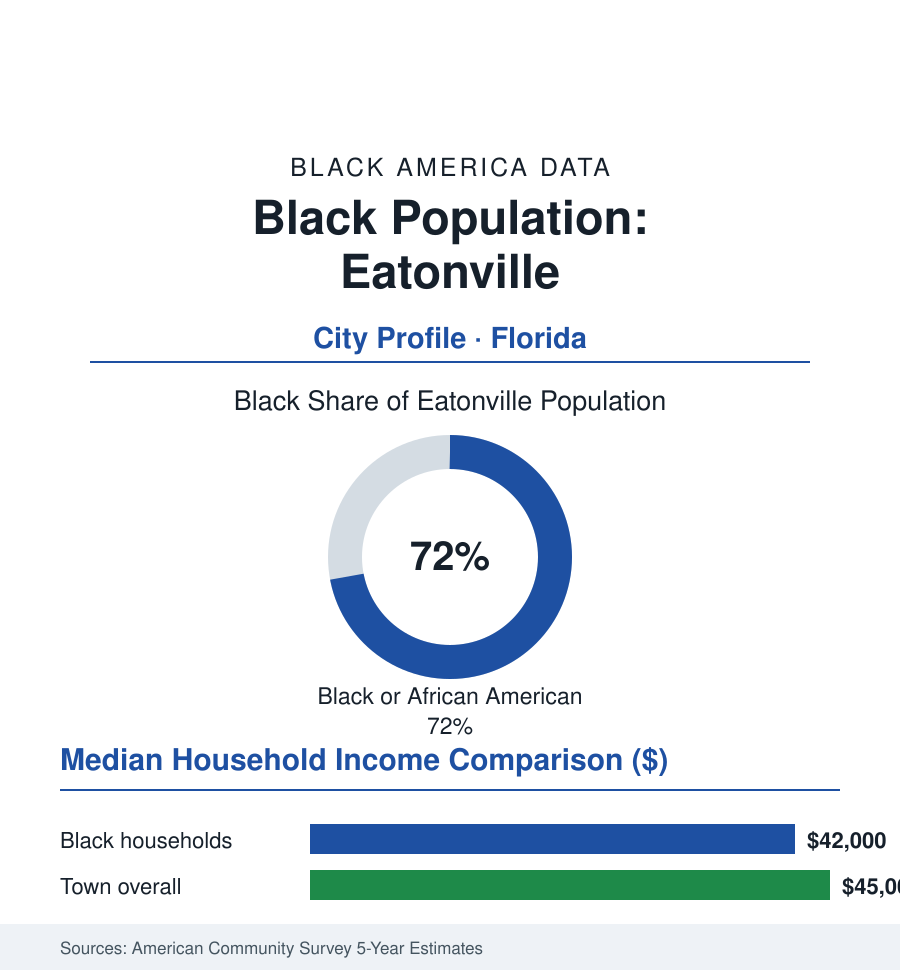

Black Cities
Black Eatonville: 2,300 People in the Oldest Black Town in America
Incorporated in 1887 and immortalized by Zora Neale Hurston, Eatonville still governs itself — a small town carrying an outsized share of the record. The census portrait.

Eatonville's Black community numbers roughly 1,700 people — about 72% of the town's 2,300 residents — in a place of five square miles' fraction whose significance is wildly out of scale: incorporated in the summer of 1887, it stands in the historical record as the first all-Black municipality incorporated in the United States, and in the literary record as Zora Neale Hurston's hometown, the ground her books made immortal. This profile reads the small town's numbers.
The Founding: A Town Voted Into Being
The town's endurance has a legal subplot the record keeps returning to: across the disfranchisement decades, when Florida's poll taxes and white primaries emptied Black electorates elsewhere, Eatonville's municipal ballot stayed in its own voters' hands — the town electing its own, taxing its own, and policing its own within a county and state organized against the premise. The political scientists who study the surviving Black towns put the mechanism plainly: incorporation is a fence the law itself must respect, and Eatonville's founders built theirs before the gates closed.
Eatonville's founding is the sovereignty file in its purest surviving form: in the 1880s, Black residents of the central Florida citrus belt — many working the groves and the town of Maitland beside them — organized to incorporate a municipality of their own, named for Josiah Eaton, the white landholder who sold the acreage when others would not. The incorporation of 1887 predates the full machinery of Jim Crow disfranchisement in Florida, and the town the founders built kept the form: an elected Black mayor and council from the first ballot to the current one, its own marshal and clerk, the Hungerford school (the Tuskegee-modeled industrial school founded at the century's turn, educating the region's Black children for generations on land the town's founders secured), the churches — Macedonia Missionary Baptist and St. Lawrence AME in the town record — and the commercial spine of Kennedy Boulevard. The literary layer arrived with Hurston: raised in Eatonville from early childhood, formed by its porch-talk culture at Joe Clarke's store — the town's crossroads institution — she carried the place into American literature entire (Jonah's Gourd Vine set in its likeness; Their Eyes Were Watching God opening in its world), making the small town the most written-about Black municipality on earth. The scholarly record treats Eatonville as the living counter-example in the municipal file: a Black town that was never unincorporated, never annexed, never dissolved — the charter of 1887 still the law of the place.
The Modern Ledger: Small Town, Large Pressures
The contemporary data are a small town's: 2,300 residents on the Orlando metropolis's northern edge (the metro's sprawl an hour's growth away in every direction — the land-value gradient of the Sun Belt file arriving at the town line), median household income in the mid-forty-thousands, poverty around a fifth of residents, a workforce in the metro's service and logistics tiers and the town's own small public payroll. The pressures are the incorporation's modern test: the land itself (the Hungerford school property — over a hundred acres of prime ground held by the school board — becoming the region's development fight of the recent years in the public record: the preservation coalition's campaign against its sale and rezoning, the town's land-use sovereignty argued parcel by parcel against the county's gravity), the infrastructure arithmetic of the very small municipality (the water, road, and grant files of a town whose entire budget is a rounding error in the metro's — the state and federal small-town programs its lifeline in the appropriations data), and the heritage economy as the counterweight (the Zora Neale Hurston Festival — ZORA! Fest, running since 1990 under the preservation association's hand — drawing tens of thousands in its festival weeks into a town of 2,300, the museum and the heritage trail the town's industry). The festivals' data are the argument in action: the culture the town produced in its porches now funds, in part, the town's defense of the ground the porches stood on.
Reading Eatonville's Numbers
Seventy-two percent of 2,300 people, a charter from 1887, and the most famous porch in American literature: Eatonville is the cities file's proof of scale's irrelevance — sovereignty is not measured in population. The town has governed itself for nearly a century and a half, through the disfranchisement that was designed to make it impossible, on ground its founders bought when buying was the only ballot left. The census counts 1,700 Black residents. History counts a republic in miniature, still in session.
More in Black Cities
Black Atlanta: Population, Distribution, and Growth of a Black Metropolis
Metro Atlanta holds more than two million Black residents — roughly one in three, second only to New York. The suburban distribution, migration history, and composition of Black Atlanta in the census data.
Black New York: The Largest Black Population in America
The New York metropolitan area holds about 3.4 million Black residents — more than any metro in the nation — and the city itself about two million. The census profile.
Black Washington: The District and the Metro
The Washington metro holds about 1.6 million Black residents, and the District itself — long a majority-Black city — now records a Black share near 41 percent. The census profile.
Source: U.S. Census Bureau, 2020 Census and American Community Survey 5-year estimates; Town of Eatonville; Association to Preserve the Eatonville Community (P.E.C.) records.